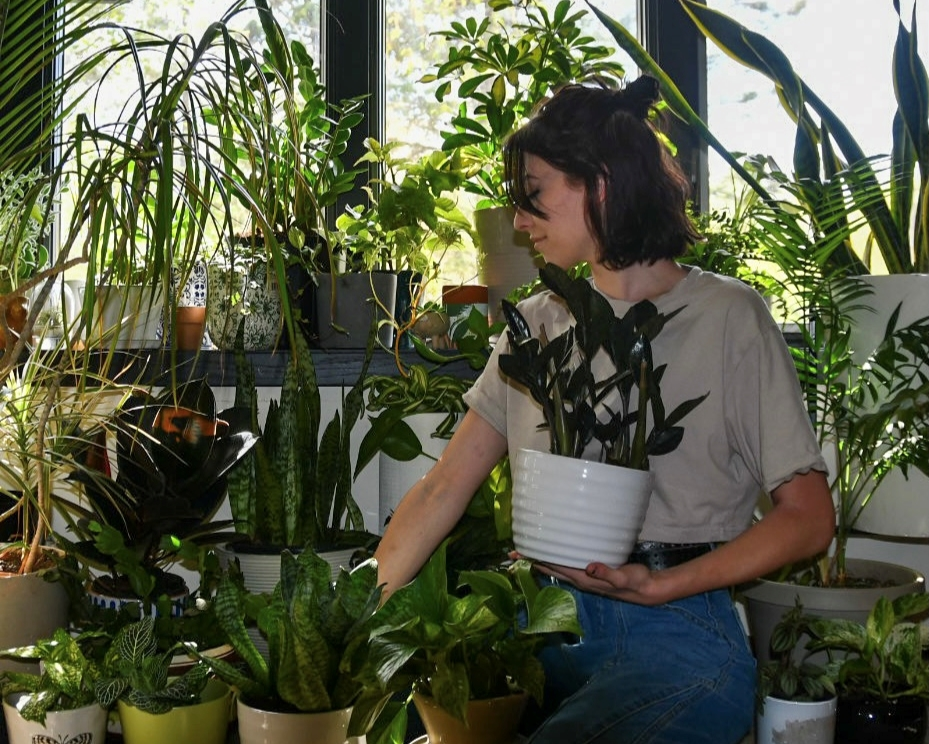
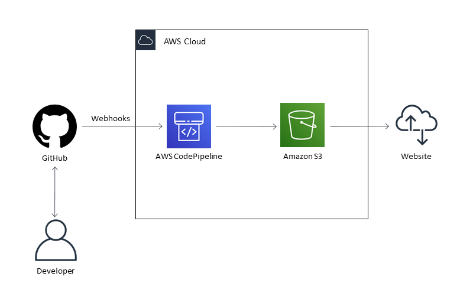

About The Project
When I am not on the clock you can often find me with plants in hand. Whether it be working with my house plants, growing microgreens, or digging around in my outdoor gardens I surround myself with flora. I have wanted to combine my passion for plants with my love for technology and this project was my first foot in the door.
This project serves several purposes. As my house plant collection grows I wanted a way to showcase, catalog, and manage my houseplants. After hours of research into botany in conjunction with my personal experience, I have created a profile for each of my house plants. Every profile contains key care information and information on toxicity, expected growth, and the plant's origins.
Beyond an online catalog, this website also acts as a plant identification system. Each of my house plants has an identification tag containing the plant name and a QR code. When friends or family have questions about a house plant or possibly want one themself, they simply scan the tag, and the plant profile is displayed.
While the website acts as an online catalog for my plants it also doubles as a plant identification system. Each of my house plants has an identification tag containing a QR code. When friends or family have questions about a house plant, or possibly want one themself, they simply scan the tag and the plant profile is pulled up.
The code behind the project is a blend of HTML, CSS, and JavaScript. The technical architecture behind the sites implements a CI/CD pipeline from my GitHub repo to the S3 bucket. The current computer architecture behind the website is rather simple, as showcased in the diagram to the left. Although this website is currently static, behind the scenes it is getting a makeover. I have been adding each plant profile to a DynamoDB instance. I also created a lambda function to query the DB which can be called through an API gateway(to see the raw JSON data provided by the API clickhere). The last piece I am working on is rewriting the website code to pull from the API on page load.
While the cloud architecture, website, and QR are nothing groundbreaking in terms of computing, what I would like to focus on is the application of the technology. Having the option to pull up a plant profile with a click of a button makes accessing information simple and easy. This is what I find as the most important part of the project. Technology is only as powerful as how you choose to use it. Using technology to help others learn is where my passions truly lie! To learn more about my other projects check out my online resume.